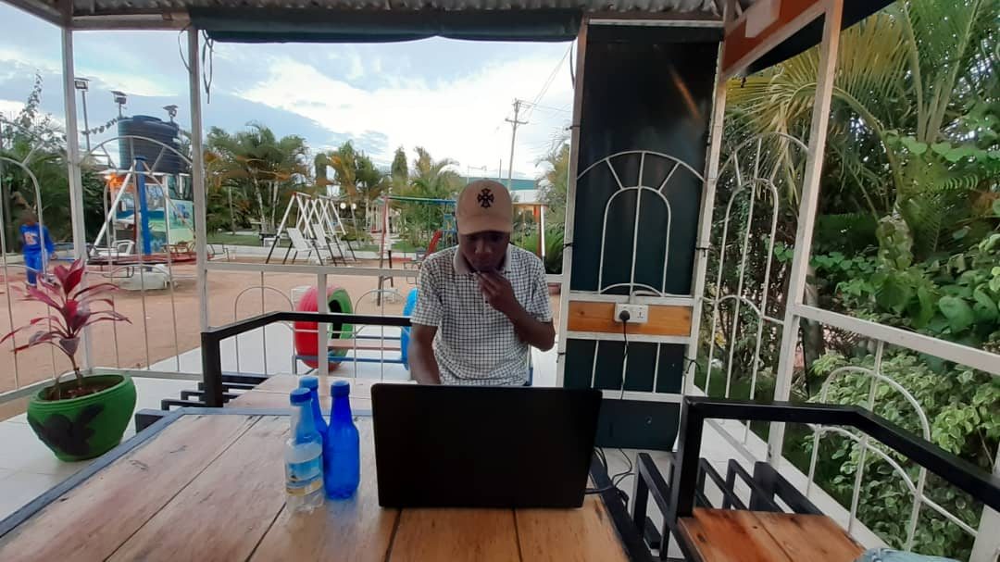

Vanadizy is old young boy, grown at malampaka village found in Simiyu, Tanzania. This person has desire on Computer technology as the reason for the establishment of vanadiy Company limited.
His fullname is EMMANUEL MARTINE CHARLES, this person has alot of stories about his life up to now both happy,sad,funny and other moments of life, in short he experienced different if not all moments of life in this world.
This article gonna show you a short tour about vanadizy life and experiences of different life in this world, i think you gonna have some funny when you read this article
Also you will found how he started his company "VANADIZY COMPANY LIMITED " how it works and what is its services all you can see only in this article.
"The power of you efforts lie on your poverty"
~Vanadizy
family
vanadizy is not married but he has a fiance. He grew at his aunt house due to some reasons that is over control but one thing that he ploud of, is how God give such opportunity life to learn more about how real life is...(read more)
hobby&profession
When you meet this person it is difficult to differentiate his hobby and his proffession because he make his proffessional to be he hobby and he ploud of what he study on his collage do you need to know what...(read more)
future
He always dream to have a big Company that will provide services to those people who using morden computer technology and that company is on implementation from now as you can see where he live he call his place as...(read more)
advice
He always wish to give advice to all people who take computer science course and informaton technology (BCS & BIT) that, there is no need to be hired by the government or any company rather than just try to ...(read more)
